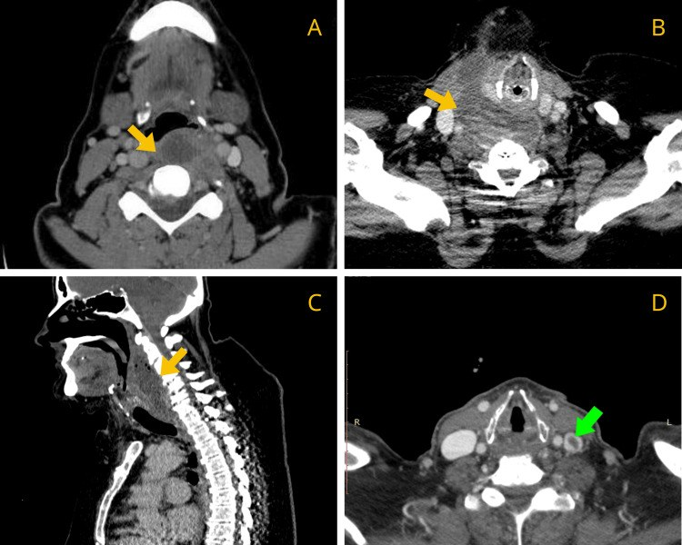

730 — Cổ sâu: áp-xe sau hầu, danger space & phù giả / Deep neck infection
Tags: pattern:nhiem-trung-co vung:co-sau protocol:CT-co-tiem
Mức chắc chắn (certainty): tổng hợp y văn (literature synthesis) — nhóm tự biên từ y văn mở, chưa gắn ca nguyên văn đơn lẻ.
1. Tổng quan — mạc alar chia thật-giả + khoang nguy hiểm xuống hoành
- Sau hầu thật (giữa họng-buccal và alar) vs danger space (sau alar, trước trước sống) — TẠI SAO danger xuống trung thất sau tới hoành: không có rào cản dưới, mủ chảy trọng lực thẳng xuống.
- Ngưỡng: sau hầu < 7 mm (C2) / < 14–22 mm (C6); áp-xe = ổ dịch + viền ngấm dày + khí + lan khoang; phù dẹt không/viền mỏng = huyết khối IJV/viêm gân dài cổ — mổ oan!
- 81,8% lan khoang kề (bên hầu, trước sống) + Staph + WBC 16,5k + CRP 191 — đường thở là ưu tiên số 1 (2/11 mở khí quản).
2. Gamut sưng cổ + sốt + nuốt đau (Gamut)
- Ổ dịch + viền dày + khí + lan: áp-xe sau hầu — kháng sinh + dẫn lưu (miệng/cổ) + giữ đường thở.
- Dẹt + không/viền mỏng + IJV tắc/viêm gân: phù giả — kháng đông/kháng viêm, đừng mổ!
- Lan dọc danger + trung thất: viêm trung thất xuống — lồng ngực + dẫn lưu + ICU.
- Khò khè + lệch khí quản: chèn đường thở — mở khí quản trước mọi CT!
3. Bảng so sánh phân biệt (ma trận đối chiếu)
| Thực thể (entity) | Hình ảnh điển hình | Chốt vào (rule-in) | Chốt loại (rule-out) | Gợi ý xác nhận |
|---|---|---|---|---|
| Áp-xe sau hầu | Ổ dịch + viền dày + khí + lan khoang | Viền dày + khí + sốt cao | Dẹt + không viền → phù | Dẫn lưu + cấy + KS |
| Phù giả (edema) | Dẹt + không/viền mỏng + IJV tắc | Huyết khối IJV/viêm gân + dẹt | Viền dày + khí → mủ | Kháng đông, không mổ |
| Danger/trung thất | Lan dọc sau alar + khí trung thất | Xuống hoành + sốc | Khu trú → thường | Lồng ngực + ICU |
| Chèn thở | Lệch/ép khí quản + khò khè | Đường thở = ưu tiên 1 | Thở êm → CT thường | Mở khí quản trước! |

(A–C) ổ dịch + lan trước sống/danger; (D) huyết khối IJV trái (xanh). Nguồn: Sideris et al., Cureus 2026 Fig. 3, CC BY 4.0.4. Protocol CT cổ tiêm
- CT cổ-ngực cản quang khi sưng + sốt + nuốt đau (đo mm + lan + khí + IJV); đường thở xấu là mở khí quản trước CT.
flowchart TD
A[Sưng cổ + sốt] --> B{Đường thở?}
B -->|Xấu| C[Mở khí quản trước!]
B -->|Ổn| D{Ổ dịch viền dày?}
D -->|Có| E[Áp-xe: dẫn lưu]
D -->|Dẹt/không viền| F[Phù: không mổ]
5. Cạm bẫy
- Phù sau hầu mổ oan — IJV + gân dài cổ + hình dẹt là chốt không mổ.
- Danger xuống trung thất bỏ sót — CT phải tới hoành khi lan dọc.
- Gây mê mất đường thở — đánh giá + mở khí quản tỉnh trước mổ dẫn lưu.
6. Tự lượng giá — Blind Quiz
Ca 1 — Nuốt đau + sốt + sưng cổ. Đọc CT 4 ảnh.
- Hỏi: lan tới đâu? Mũi tên xanh là gì? Mổ đường nào?
Bấm để hiện đáp án
- Dấu hiệu (findings): ổ dịch sau hầu + lan trước sống + danger + tắc IJV trái (xanh).
- Chẩn đoán (diagnosis): áp-xe sau hầu lan rộng + huyết khối IJV — dẫn lưu (miệng/cổ) + kháng sinh + kháng đông + giữ đường thở.
- Nguồn: Sideris et al., Fig. 3, CC BY 4.0.
Ca 2 — Dẹt sau hầu + không viền + IJV tắc + C6 10 mm: mủ hay phù? (Bảng mục 3.)
Bấm để hiện đáp án
- Phù giả: kháng đông, không mổ (viền dày + khí mới là mủ).
Bài liên quan chéo
- 700 – Tổng quan Đầu Cổ
- 1939 – Viêm cân mạc hoại tử vùng cổ: khi nào dày cân/khí là cấp cứu mổ
- 710 – Mũi xoang (lan từ xoang)
- [750 – Hạch cổ (dự kiến viết sau)]
Không dùng để chẩn đoán độc lập khi chưa có người hướng dẫn.